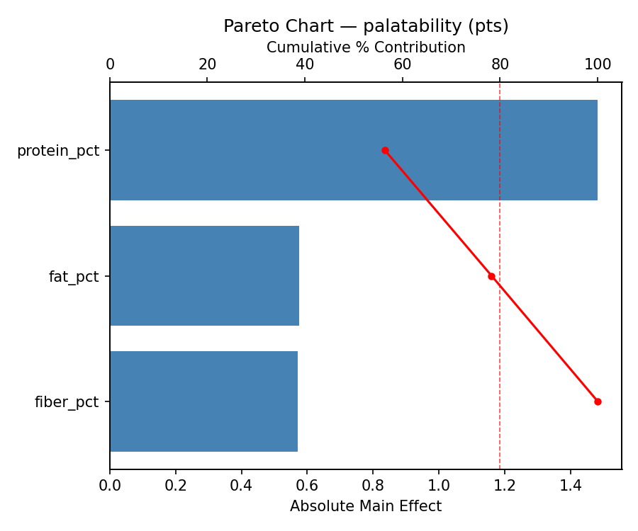
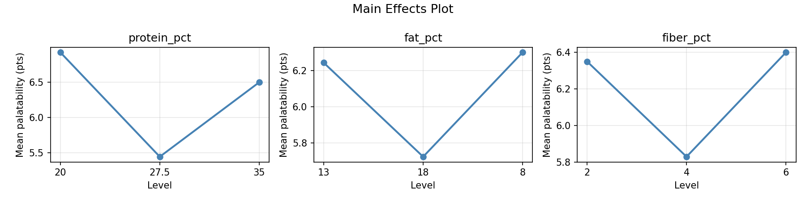
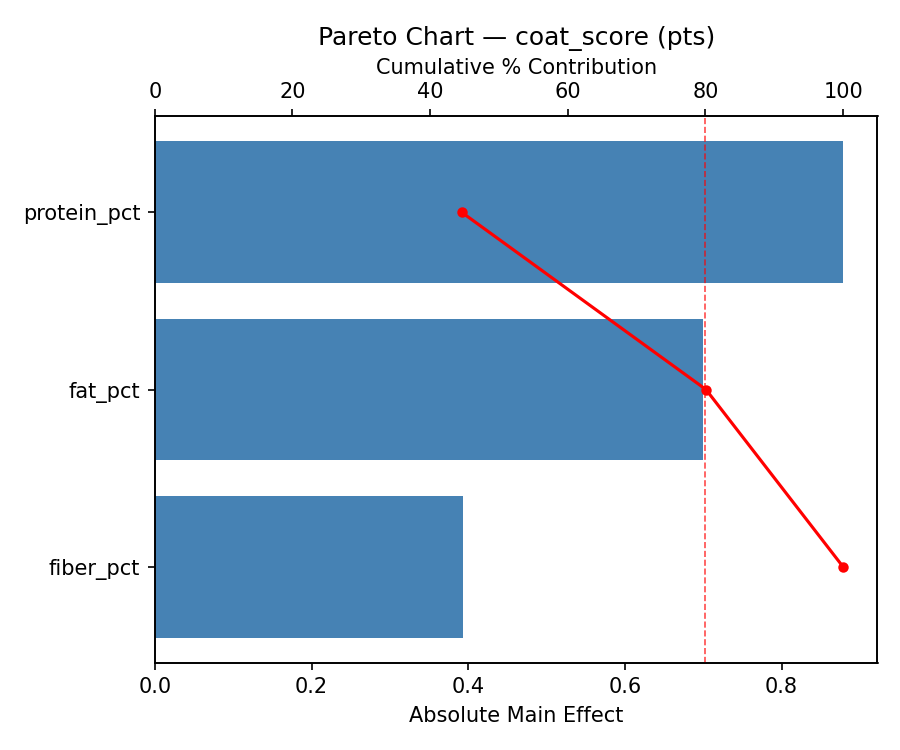
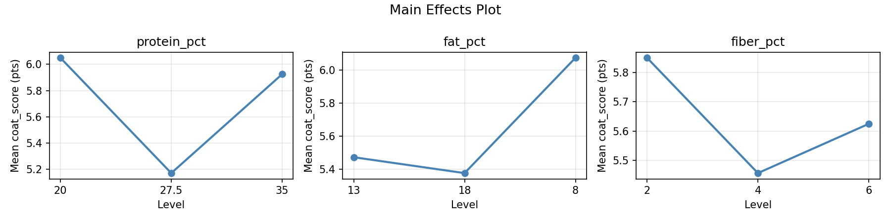
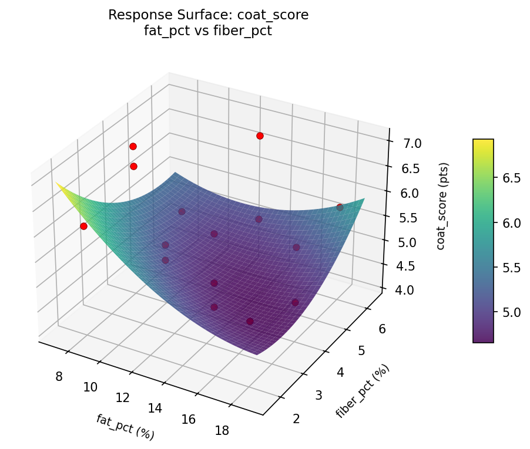
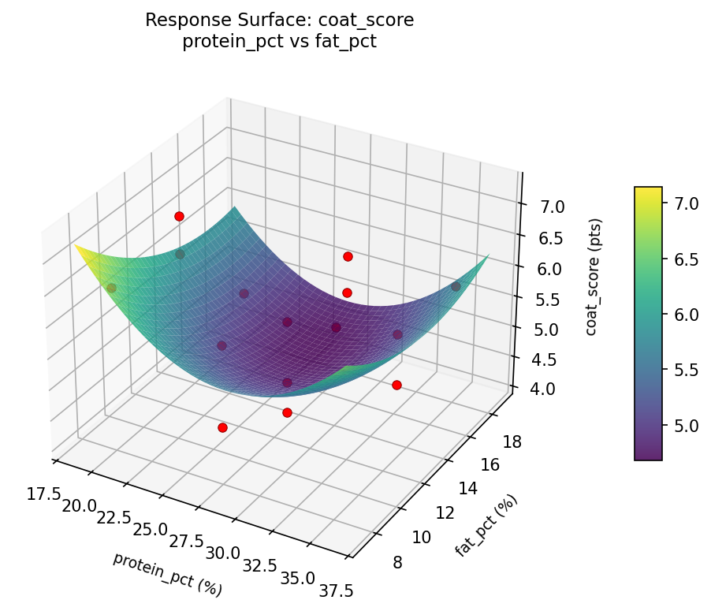
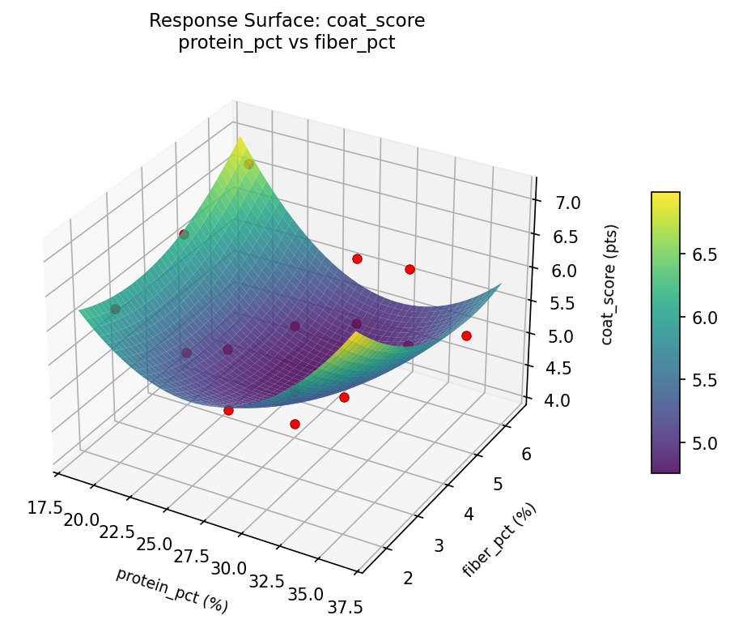
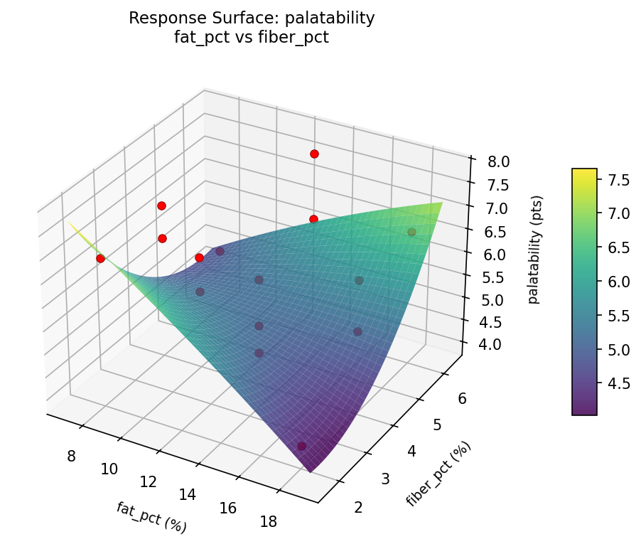
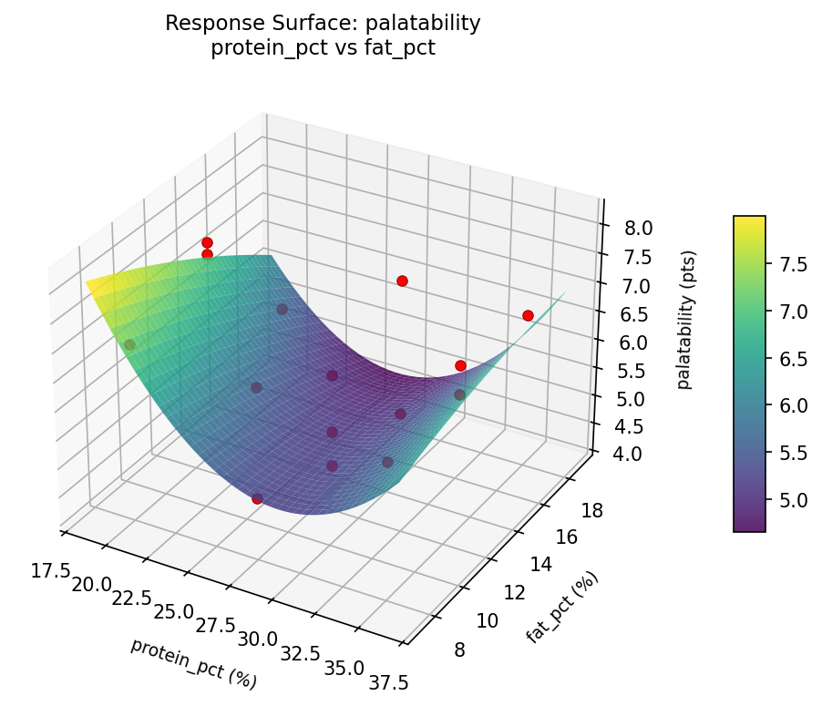
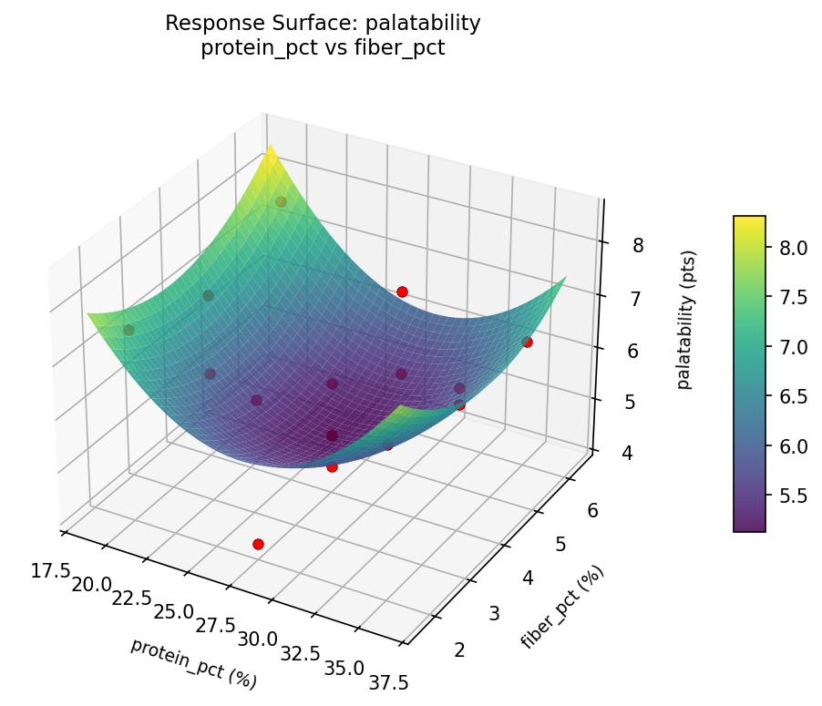

Summary
This experiment investigates dog kibble formulation. Box-Behnken design to maximize palatability and coat condition by tuning protein content, fat percentage, and fiber content.
The design varies 3 factors: protein pct (%), ranging from 20 to 35, fat pct (%), ranging from 8 to 18, and fiber pct (%), ranging from 2 to 6. The goal is to optimize 2 responses: palatability (pts) (maximize) and coat score (pts) (maximize). Fixed conditions held constant across all runs include breed size = medium, life stage = adult.
A Box-Behnken design was chosen because it efficiently fits quadratic models with 3 continuous factors while avoiding extreme corner combinations — requiring only 15 runs instead of the 8 needed for a full factorial at two levels.
Quadratic response surface models were fitted to capture potential curvature and factor interactions. The RSM contour plots below visualize how pairs of factors jointly affect each response.
Key Findings
For palatability, the most influential factors were protein pct (56.4%), fat pct (21.9%), fiber pct (21.7%). The best observed value was 7.7 (at protein pct = 35, fat pct = 8, fiber pct = 4).
For coat score, the most influential factors were protein pct (44.6%), fat pct (35.5%), fiber pct (19.9%). The best observed value was 6.9 (at protein pct = 27.5, fat pct = 8, fiber pct = 2).
Recommended Next Steps
- Run confirmation experiments at the predicted optimal settings to validate the model.
- Consider whether any fixed factors should be varied in a future study.
Experimental Setup
Factors
| Factor | Low | High | Unit |
|---|
protein_pct | 20 | 35 | % |
fat_pct | 8 | 18 | % |
fiber_pct | 2 | 6 | % |
Fixed: breed_size = medium, life_stage = adult
Responses
| Response | Direction | Unit |
|---|
palatability | ↑ maximize | pts |
coat_score | ↑ maximize | pts |
Configuration
{
"metadata": {
"name": "Dog Kibble Formulation",
"description": "Box-Behnken design to maximize palatability and coat condition by tuning protein content, fat percentage, and fiber content"
},
"factors": [
{
"name": "protein_pct",
"levels": [
"20",
"35"
],
"type": "continuous",
"unit": "%"
},
{
"name": "fat_pct",
"levels": [
"8",
"18"
],
"type": "continuous",
"unit": "%"
},
{
"name": "fiber_pct",
"levels": [
"2",
"6"
],
"type": "continuous",
"unit": "%"
}
],
"fixed_factors": {
"breed_size": "medium",
"life_stage": "adult"
},
"responses": [
{
"name": "palatability",
"optimize": "maximize",
"unit": "pts"
},
{
"name": "coat_score",
"optimize": "maximize",
"unit": "pts"
}
],
"settings": {
"operation": "box_behnken",
"test_script": "use_cases/167_dog_kibble_formulation/sim.sh"
}
}
Experimental Matrix
The Box-Behnken Design produces 15 runs. Each row is one experiment with specific factor settings.
| Run | protein_pct | fat_pct | fiber_pct |
|---|
| 1 | 27.5 | 8 | 2 |
| 2 | 27.5 | 13 | 4 |
| 3 | 35 | 13 | 6 |
| 4 | 35 | 13 | 2 |
| 5 | 27.5 | 13 | 4 |
| 6 | 27.5 | 13 | 4 |
| 7 | 20 | 13 | 6 |
| 8 | 35 | 8 | 4 |
| 9 | 27.5 | 8 | 6 |
| 10 | 35 | 18 | 4 |
| 11 | 20 | 13 | 2 |
| 12 | 27.5 | 18 | 6 |
| 13 | 20 | 8 | 4 |
| 14 | 20 | 18 | 4 |
| 15 | 27.5 | 18 | 2 |
Step-by-Step Workflow
1
Preview the design
$ python doe.py info --config use_cases/167_dog_kibble_formulation/config.json
2
Generate the runner script
$ python doe.py generate --config use_cases/167_dog_kibble_formulation/config.json \
--output use_cases/167_dog_kibble_formulation/results/run.sh --seed 42
3
Execute the experiments
$ bash use_cases/167_dog_kibble_formulation/results/run.sh
4
Analyze results
$ python doe.py analyze --config use_cases/167_dog_kibble_formulation/config.json
5
Get optimization recommendations
$ python doe.py optimize --config use_cases/167_dog_kibble_formulation/config.json
6
Generate the HTML report
$ python doe.py report --config use_cases/167_dog_kibble_formulation/config.json \
--output use_cases/167_dog_kibble_formulation/results/report.html
Real-World Experiment Workflow
ℹ
Physical Animal Care Experiment? Use the Manual Workflow
Animal experiments involve living creatures with variable behavior, biological needs, and environmental responses that can't be simulated. The simulation script above is for demonstration. For your real experiments, use record, status, and export-worksheet.
$ python doe.py export-worksheet --config use_cases/167_dog_kibble_formulation/config.json \
--format csv --output worksheet.csv
$ python doe.py status --config use_cases/167_dog_kibble_formulation/config.json
$ python doe.py record --config use_cases/167_dog_kibble_formulation/config.json --run 1
$ python doe.py analyze --config use_cases/167_dog_kibble_formulation/config.json --partial
$ python doe.py analyze --config use_cases/167_dog_kibble_formulation/config.json
$ python doe.py optimize --config use_cases/167_dog_kibble_formulation/config.json
$ python doe.py report --config use_cases/167_dog_kibble_formulation/config.json \
--output report.html
✔
Works Without a Test Script
The analysis pipeline doesn't care how results were produced. Record your measurements with record, and the full analysis, optimization, and reporting pipeline works identically. Use --partial to get early insights before all runs are complete.
Features Exercised
| Feature | Value |
|---|
| Design type | box_behnken |
| Factor types | continuous (all 3) |
| Arg style | double-dash |
| Responses | 2 (palatability ↑, coat_score ↑) |
| Total runs | 15 |
Analysis Results
Generated from actual experiment runs using the DOE Helper Tool.
Response: palatability
Top factors: protein_pct (56.4%), fat_pct (21.9%), fiber_pct (21.7%).
Pareto Chart

Main Effects Plot

Response: coat_score
Top factors: protein_pct (44.6%), fat_pct (35.5%), fiber_pct (19.9%).
Pareto Chart

Main Effects Plot

Response Surface Plots
3D surfaces fitted with quadratic RSM. Red dots are observed data points.
coat score fat pct vs fiber pct

coat score protein pct vs fat pct

coat score protein pct vs fiber pct

palatability fat pct vs fiber pct

palatability protein pct vs fat pct

palatability protein pct vs fiber pct

Full Analysis Output
RSM surface: rsm_palatability_protein_pct_vs_fat_pct.png
RSM surface: rsm_palatability_protein_pct_vs_fiber_pct.png
RSM surface: rsm_palatability_fat_pct_vs_fiber_pct.png
RSM surface: rsm_coat_score_protein_pct_vs_fat_pct.png
RSM surface: rsm_coat_score_protein_pct_vs_fiber_pct.png
RSM surface: rsm_coat_score_fat_pct_vs_fiber_pct.png
=== Main Effects: palatability ===
Factor Effect Std Error % Contribution
--------------------------------------------------------------
protein_pct 1.4821 0.2788 56.4%
fat_pct 0.5750 0.2788 21.9%
fiber_pct 0.5714 0.2788 21.7%
=== Summary Statistics: palatability ===
protein_pct:
Level N Mean Std Min Max
------------------------------------------------------------
20 4 6.9250 0.9946 5.5000 7.7000
27.5 7 5.4429 1.0644 4.2000 6.9000
35 4 6.5000 0.2449 6.3000 6.8000
fat_pct:
Level N Mean Std Min Max
------------------------------------------------------------
13 7 6.2429 1.2259 4.4000 7.7000
18 4 5.7250 1.1413 4.2000 6.6000
8 4 6.3000 0.9201 5.0000 7.0000
fiber_pct:
Level N Mean Std Min Max
------------------------------------------------------------
2 4 6.3500 1.4663 4.2000 7.5000
4 7 5.8286 0.9178 4.4000 7.0000
6 4 6.4000 1.1106 5.0000 7.7000
=== Main Effects: coat_score ===
Factor Effect Std Error % Contribution
--------------------------------------------------------------
protein_pct 0.8786 0.2163 44.6%
fat_pct 0.7000 0.2163 35.5%
fiber_pct 0.3929 0.2163 19.9%
=== Summary Statistics: coat_score ===
protein_pct:
Level N Mean Std Min Max
------------------------------------------------------------
20 4 6.0500 0.9327 4.7000 6.8000
27.5 7 5.1714 0.7135 4.1000 6.1000
35 4 5.9250 0.7411 5.1000 6.9000
fat_pct:
Level N Mean Std Min Max
------------------------------------------------------------
13 7 5.4714 0.9376 4.1000 6.8000
18 4 5.3750 0.5315 4.7000 5.8000
8 4 6.0750 0.9106 4.8000 6.9000
fiber_pct:
Level N Mean Std Min Max
------------------------------------------------------------
2 4 5.8500 0.4509 5.2000 6.2000
4 7 5.4571 1.0374 4.1000 6.9000
6 4 5.6250 0.8884 4.8000 6.8000
Pareto chart (palatability): use_cases/167_dog_kibble_formulation/results/analysis/pareto_palatability.png
Pareto chart (coat_score): use_cases/167_dog_kibble_formulation/results/analysis/pareto_coat_score.png
Main effects (palatability): use_cases/167_dog_kibble_formulation/results/analysis/main_effects_palatability.png
Main effects (coat_score): use_cases/167_dog_kibble_formulation/results/analysis/main_effects_coat_score.png
Optimization Recommendations
=== Optimization: palatability ===
Direction: maximize
Best observed run: #10
protein_pct = 35
fat_pct = 8
fiber_pct = 4
Value: 7.7
RSM Model (linear, R² = 0.1509, Adj R² = -0.0807):
Coefficients:
intercept +6.1200
protein_pct +0.2000
fat_pct -0.4125
fiber_pct -0.3125
RSM Model (quadratic, R² = 0.5798, Adj R² = -0.1765):
Coefficients:
intercept +5.9667
protein_pct +0.2000
fat_pct -0.4125
fiber_pct -0.3125
protein_pct*fat_pct +0.1000
protein_pct*fiber_pct +0.1000
fat_pct*fiber_pct +0.8750
protein_pct^2 +0.5292
fat_pct^2 +0.4542
fiber_pct^2 -0.6958
Curvature analysis:
fiber_pct coef=-0.6958 concave (has a maximum)
protein_pct coef=+0.5292 convex (has a minimum)
fat_pct coef=+0.4542 convex (has a minimum)
Notable interactions:
fat_pct*fiber_pct coef=+0.8750 (synergistic)
Predicted optimum (from linear model):
protein_pct = 27.5
fat_pct = 8
fiber_pct = 2
Predicted value: 6.8450
Model quality: Weak fit — consider adding center points or using a different design.
Factor importance:
1. fiber_pct (effect: 1.1, contribution: 39.9%)
2. fat_pct (effect: 0.9, contribution: 32.5%)
3. protein_pct (effect: 0.7, contribution: 27.6%)
=== Optimization: coat_score ===
Direction: maximize
Best observed run: #3
protein_pct = 27.5
fat_pct = 8
fiber_pct = 2
Value: 6.9
RSM Model (linear, R² = 0.5038, Adj R² = 0.3685):
Coefficients:
intercept +5.6067
protein_pct +0.4875
fat_pct -0.3625
fiber_pct -0.5000
RSM Model (quadratic, R² = 0.8531, Adj R² = 0.5886):
Coefficients:
intercept +5.2333
protein_pct +0.4875
fat_pct -0.3625
fiber_pct -0.5000
protein_pct*fat_pct +0.1500
protein_pct*fiber_pct +0.2250
fat_pct*fiber_pct +0.7750
protein_pct^2 +0.2083
fat_pct^2 +0.4083
fiber_pct^2 +0.0833
Curvature analysis:
fat_pct coef=+0.4083 convex (has a minimum)
protein_pct coef=+0.2083 convex (has a minimum)
fiber_pct coef=+0.0833 negligible curvature
Notable interactions:
fat_pct*fiber_pct coef=+0.7750 (synergistic)
Predicted optimum (from quadratic model):
protein_pct = 27.5
fat_pct = 8
fiber_pct = 2
Predicted value: 7.3625
Model quality: Good fit — general trends are captured, some noise remains.
Factor importance:
1. fiber_pct (effect: 1.0, contribution: 36.7%)
2. protein_pct (effect: 1.0, contribution: 35.8%)
3. fat_pct (effect: 0.8, contribution: 27.5%)